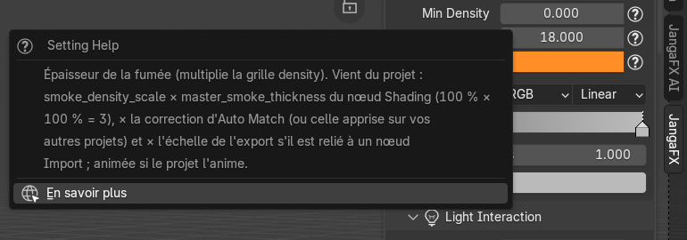
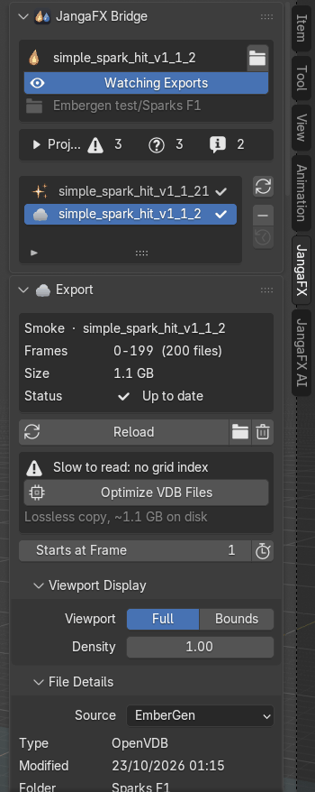
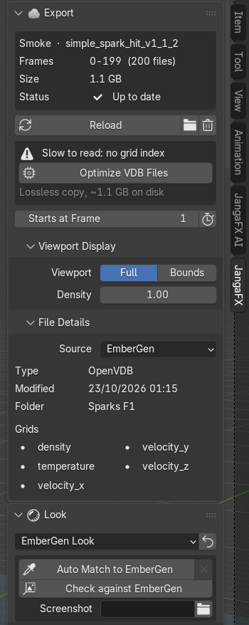
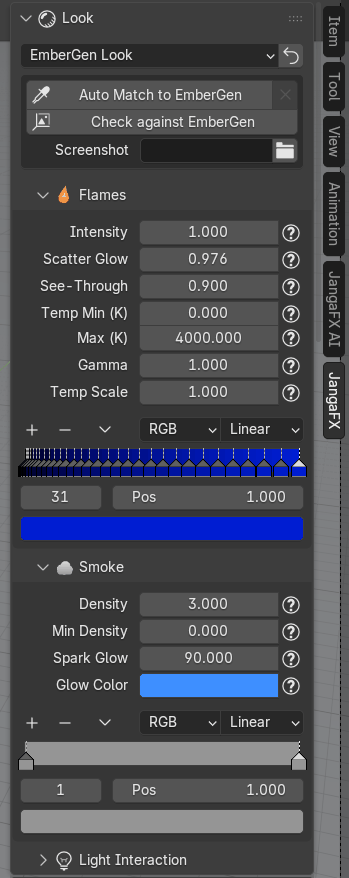
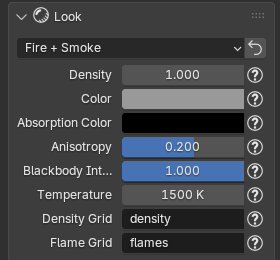
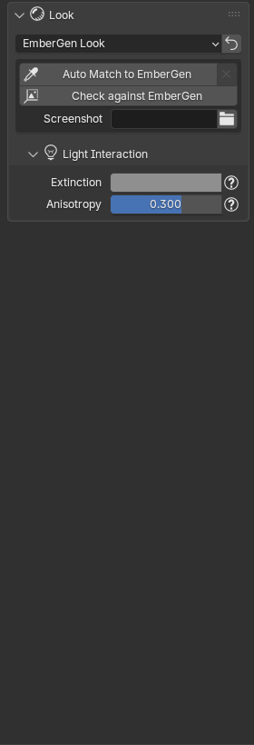
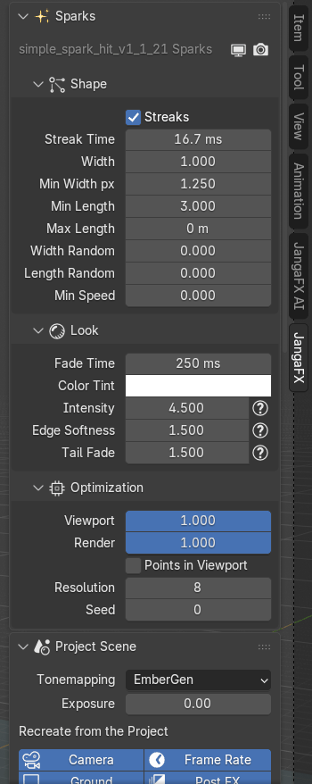
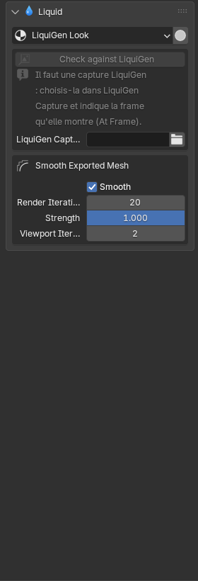
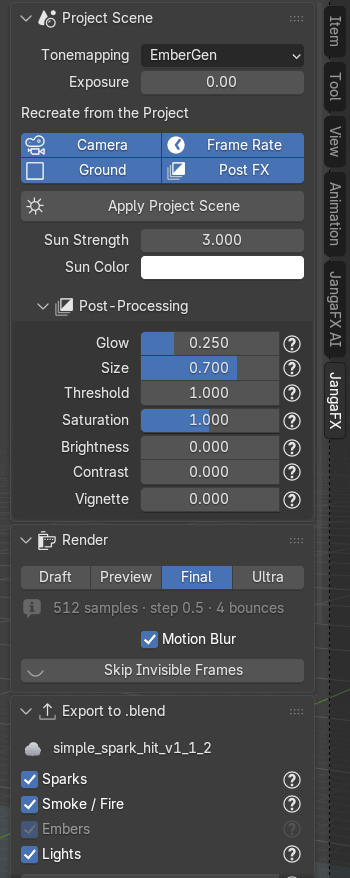
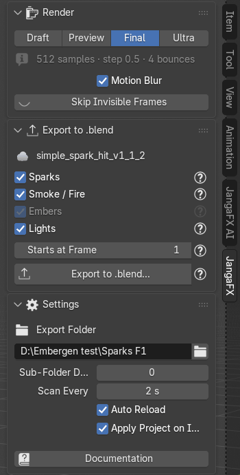

Le panneau JangaFX
Le panneau JangaFX (touche N dans la vue 3D, onglet JangaFX) est découpé en sections que vous pouvez
replier (clic sur le titre) ou réordonner (glisser la poignée :::: à droite du titre). Une section n'apparaît que
si elle sert : par exemple Sparks seulement si le projet a des étincelles.
Partout, le bouton ? à côté d'un réglage explique ce qu'il fait et d'où vient sa valeur (lue dans le projet, mesurée, ou choisie par l'add-on). Survolez-le pour une bulle d'aide, cliquez dessus pour une fenêtre qui reste ouverte, avec le lien En savoir plus vers cette documentation.


Les réglages des étincelles, du liquide et du rendu affichent aussi leur explication quand vous les survolez.
Projet et liste des exports
La première section, JangaFX Bridge, montre le projet ouvert :
- le nom du projet et le bouton dossier (à droite) pour ouvrir un autre projet ;
- Watching Exports / Watch Exports : allume ou coupe la surveillance du dossier des exports ;
- le dossier surveillé (en gris) ;
- le rapport du projet.
En dessous, la liste des exports trouvés : une ligne par export, avec une icône selon son rôle (fumée, étincelles, liquide) et son état à droite :
- coche : importé et à jour ;
- flèches : le fichier a changé sur le disque, il faut le recharger ;
- triangle rouge : des fichiers manquent ;
- ligne grisée : pas encore importé.
Les boutons à droite de la liste :
- Rescan (flèches) : relit le dossier des exports tout de suite ;
- Remove from Library (−) : retire l'export sélectionné de la liste et son objet de la scène (les fichiers restent sur le disque) ;
- Show Removed : fait revenir les exports retirés.


Export sélectionné
La section Export décrit la ligne choisie dans la liste : son rôle et son nom, les images (Frames), la taille sur le disque (Size), l'état (Status) et les images manquantes s'il y en a.
- Export pas encore importé : Import l'ajoute à la scène, le bouton dossier ouvre son dossier.
- Export importé :
- Reload : le recharge depuis le disque ;
- bouton dossier : ouvre son dossier dans l'explorateur ;
- corbeille (Remove) : supprime l'objet importé (les fichiers restent sur le disque).
- Slow to read: no grid index et Optimize VDB Files : les VDB d'EmberGen n'ont pas de table des grilles,
Blender relit tout le fichier pour chaque grille à chaque image. Optimize VDB Files écrit une copie indexée
(mêmes grilles, mêmes valeurs, sans perte) dans un sous-dossier
JangaFX Optimizedet l'utilise. La taille approximative de la copie est indiquée dessous. Une fois fait, la ligne devient Optimized VDB copy in use. - Starts at Frame : image de la scène où joue la première image de l'export. Le bouton à droite (Fit Scene Range) cale la plage d'images de la scène sur celle de l'export.
Deux sous-sections repliées :
- Viewport Display (volumes) : Full affiche le volume, Bounds seulement sa boîte (le plus rapide) ; Density change la densité dans la vue 3D seulement (pas au rendu).
- File Details : source (EmberGen, LiquiGen), type de fichier, date de modification, dossier et liste des grilles du VDB.


Look
La section Look règle l'apparence du volume (fumée et feu). Elle suit l'export sélectionné ; si une autre ligne est choisie, elle montre le premier volume importé (son nom est rappelé en gris en haut).
Le menu en haut choisit le préréglage :
- EmberGen Look (par défaut) : reproduit le rendu du projet EmberGen (
.ember) ; sans projet trouvé, ce sont les valeurs par défaut d'EmberGen ; - Fire + Smoke, Smoke, Fire : des looks simples (voir plus bas).
Le bouton flèche à droite (Apply Preset) reconstruit le matériau avec le préréglage choisi ; avec EmberGen Look, le projet est relu. Attention : vos retouches à la main sont remplacées.
Avec EmberGen Look, un encadré propose :
- Auto Match to EmberGen et la croix à droite (Reset Auto Match) ;
- Check against EmberGen ;
- Screenshot : une capture d'écran d'EmberGen à utiliser comme référence (facultatif), et At Frame, l'image qu'elle montre.
Ces outils sont expliqués dans Vérifier et Auto Match.


Looks simples
Avec Fire + Smoke, Smoke ou Fire, le volume utilise un matériau simple de Blender (Principled Volume) dont les réglages sont affichés directement : densité, couleur, couleur d'absorption, direction de la diffusion (Anisotropy), force du feu (Blackbody Intensity), température, et les grilles du VDB utilisées pour la fumée (Density Grid) et pour le feu (Flame Grid). Ces valeurs viennent du préréglage, pas du projet.


Flammes
Sous-section Flames (seulement si le projet a des flammes) :
- Intensity : force de la lumière des flammes ;
- Scatter Glow : lueur des flammes diffusée dans la fumée autour (lueur orange des explosions) ;
- See-Through : amincit la fumée là où il y a des flammes pour qu'elle ne les cache pas ;
- Temp Min (K) et Max (K) : températures du début et de la fin du dégradé de couleur des flammes ;
- Gamma : courbe de ce dégradé (au-dessus de 1, les flammes restent plus longtemps dans le bas du dégradé) ;
- Temp Scale : diviseur de la grille de température du VDB, mesuré à l'import ;
- le dégradé de couleur des flammes, lu dans le projet.
Fumée
Sous-section Smoke :
- Density : épaisseur de la fumée ;
- Min Density : en dessous de ce seuil, la fumée n'est pas dessinée ;
- Tint Temp Min et Max (K) : quand la fumée est teintée par la température, températures du début et de la fin de son dégradé ;
- Spark Glow et Glow Color : lumière des étincelles diffusée dans la fumée, et sa couleur ;
- le dégradé de couleur de la fumée.
Interaction avec la lumière
Sous-section Light Interaction (repliée) :
- Extinction : teinte de la fumée vue par la caméra ;
- Shadow Tint : teinte des ombres dans la fumée (seulement si le projet la règle à part) ;
- Anisotropy : direction de la diffusion de la lumière (positive : la fumée s'éclaire à contre-jour).


Masquage émissif
Sous-section Emissive Masking (repliée, absente quand les flammes sont en « corps noir », sur lesquelles elle n'agit pas) : éteint les flammes là où la fumée a une certaine densité, comme EmberGen.
- Density Ref : densité autour de laquelle les flammes sont éteintes ;
- Width : largeur de la transition ;
- Ramp : courbe du masque ;
- Intensity : force du masque (à 1, les flammes sont complètement éteintes à la densité de référence).
Ces réglages peuvent être animés si le projet les anime (losange de clé à droite).
Étincelles
La section Sparks apparaît quand le projet a des particules (export Alembic). Elle reste visible quelle que soit la ligne choisie dans la liste. En haut, l'objet des étincelles avec deux boutons : visible dans la vue 3D (écran) et au rendu (appareil photo).
- Shape : forme des traînées. Streaks (traînées alignées sur la vitesse ; décoché : des points ronds), Streak Time, Width, Min Width px (largeur minimale à l'écran, en pixels), Min Length, Max Length, Width Random, Length Random, Min Speed (cache les particules plus lentes, par exemple posées au sol).
- Look : Fade Time, Color Tint (multiplie la couleur), puis Intensity (luminosité), Edge Softness (douceur des bords) et Tail Fade (extinction de la queue des traînées).
- Optimization (repliée) : affichage dans la vue 3D et au rendu, Points in Viewport (des points au lieu des traînées dans la vue, le rendu garde les traînées), Resolution (segments des traînées) et Seed.
Survolez un réglage pour lire d'où vient sa valeur.


Si la section affiche « Older spark setup: reload the export to get every setting », rechargez l'export (Reload) pour avoir tous les réglages.
Liquide
La section Liquid apparaît avec un projet LiquiGen.
- Le menu LiquiGen Look choisit le matériau du liquide : l'apparence du projet LiquiGen, ou l'un de vos matériaux d'eau trouvés dans vos bibliothèques d'assets (ajouté une fois, textures reliées).
- Le bouton à droite (Detail Preview) règle la vue 3D pour bien lire les détails du liquide (mode Solid, matcap brillant, écume en blanc, plus de lissage).
- Un encadré Check against LiquiGen avec LiquiGen Capture et At Frame (voir Vérifier un projet LiquiGen).
- Surface Foam : écume peinte sur la surface, éteinte à l'import (l'écume vient des particules) ; on/off dans la vue et au rendu, son Shader (vide : écume blanche intégrée), sa quantité et sa forme : Coverage, Threshold, Softness, Lace Scale, Lace Width, Lace Amount, Distortion, Foam Height, et pour la mousse Bubble Size, Bubble Variation, Bubble Relief, Translucency, Color. Ces valeurs sont des choix de l'add-on, pas lus dans le projet.
- Smooth Exported Mesh : lissage du maillage exporté par LiquiGen.
- Surface from Particles : surface reconstruite à partir des particules (cachée quand le maillage exporté est utilisé).
- Une boîte par type de particules blanches (écume, embruns, bulles), avec son bouton de rendu.


Scène du projet
La section Project Scene recrée l'ambiance du projet :
- Tonemapping : EmberGen (la courbe du projet, comme EmberGen), Filmic (hautes lumières douces, les flammes deviennent jaune pâle), AgX (celui de Blender) ou Realistic (comme une photo d'explosion : corps orange, cœur jaune-blanc) ;
- Exposure : exposition en plus de ce réglage, en stops ;
- Recreate from the Project : ce que Apply Project Scene doit recréer :
- Camera : la caméra d'EmberGen (champ de vision, orbite, distance) ;
- Ground : le sol du projet, pour que l'effet l'éclaire et s'y reflète ;
- Frame Rate : la cadence du projet ;
- Post FX : le post-traitement du projet ;
- Apply Project Scene : recrée les lumières, le tonemapping, le post-traitement, la qualité de rendu et, si coché, la caméra ;
- Sun Strength et Sun Color : force et couleur du soleil du projet.


Post-traitement
Sous-section Post-Processing (repliée), quand le projet a un post-traitement. Il est refait dans le compositing de Blender :
- Glow, Size, Threshold : force et taille du halo autour des zones lumineuses, et luminosité à partir de laquelle il apparaît ;
- Saturation, Brightness, Contrast : couleurs de l'image finale ;
- Vignette : assombrissement des bords ;
- une ligne « Channel swap … (from the project) » si le projet échange les canaux de couleur.
Rendu
La section Render :
- Draft / Preview / Final / Ultra : qualité du rendu Cycles. Draft est le plus rapide (pour le timing et le cadrage), Preview pour juger le look, Final pour la production, Ultra sans limite de temps. La ligne grise dessous résume les échantillons, le pas du volume et les rebonds de lumière.
- Motion Blur : flou de mouvement calculé avec la vitesse exportée (Cycles).
- Skip Invisible Frames : ne rend pas l'effet aux images où la caméra active ne le voit pas (pas encore simulé, hors champ ou réduit à quelques pixels) ; relancez-le après avoir changé la caméra ou la plage d'images. Le bouton œil à côté (Render All Frames) annule cela.
Export en .blend
La section Export to .blend écrit l'effet dans un fichier .blend à ajouter dans une autre scène. Tout est
expliqué dans Exporter l'effet en .blend.
Réglages
La section Settings (repliée) :
- Export Folder : le dossier où EmberGen et LiquiGen écrivent leurs exports (rempli par Open Project) ;
- Sub-Folder Depth : nombre de niveaux de sous-dossiers parcourus ;
- Scan Every : temps entre deux lectures du dossier (quand la surveillance est allumée) ;
- Auto Reload : recharge tout seul un export importé quand ses fichiers changent ;
- Apply Project on Import : à l'import d'un export qui a son projet à côté, applique tout seul ses lumières, son tonemapping, son post-traitement et sa qualité de rendu ;
- Documentation : ouvre cette documentation dans votre navigateur.

